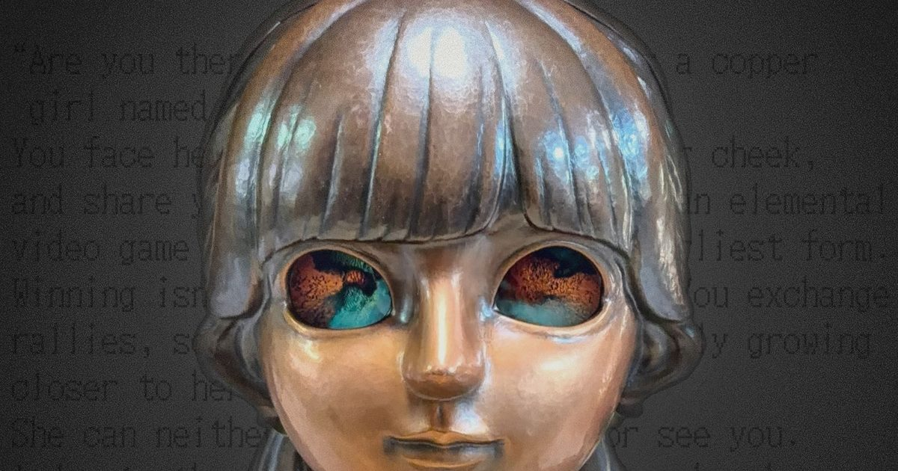
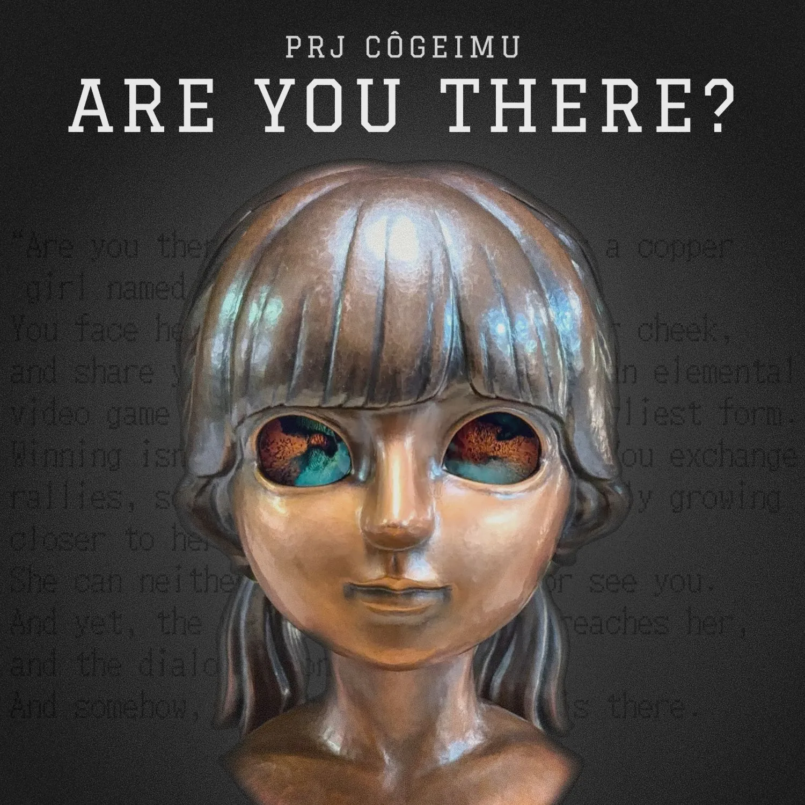

公式ウェブサイトを公開しましたOur official website is now live

PRJ CÔGEIMU の公式ウェブサイトを公開しました。CÔGEIMU は、金属を叩いて形づくる日本の伝統技法「鍛金」と、デジタル表現とインタラクションから生まれる「ゲーム」を掛け合わせるゲームアートプロジェクトです。 The official website of PRJ CÔGEIMU is now online. CÔGEIMU is a game art project that brings together tankin, the traditional Japanese craft of shaping metal by hammering, and games, born of digital expression and interaction.
サイトで見られることWhat you’ll find here
作品ページでは、アルミニウムの少女像「01 Yuki」と、銅の少女像「02 Kagane『ARE YOU THERE?』」について、コンセプトやステートメント、仕様から制作の過程までを紹介しています。 The work pages introduce our two girls: 01 Yuki, hammered from aluminium, and 02 Kagane “ARE YOU THERE?”, hammered from copper. You’ll find the concept, the artist statement, the specs and how each piece was made.


また、制作メンバー3人のプロフィールや、これまでの展示実績と掲載メディアもまとめています。CÔGEIMU がどんなプロジェクトなのか、工芸とゲームを掛け合わせることで何をつくろうとしているのか。プロジェクトの概要やコンセプトも、あわせてご覧ください。 You’ll also find profiles of the three of us and our exhibitions and press so far. What kind of project is CÔGEIMU, and what are we trying to make by bringing craft and games together? Take a look at the project’s outline and concept, too.
これからのお知らせWhat’s next
今後は、展示・出展の予定や新しい作品の制作など、CÔGEIMU のこれからの展開も、このウェブサイトで公開していきます。あわせてこのニュースでは、カミエナ・塩見亮介・金子尊の3人による制作の裏話など、ここでしか読めない話もお届けしていく予定です。 From here on, we’ll share CÔGEIMU’s next steps on this website, from upcoming exhibitions to new works in progress. Here in News, we’ll also bring you stories you won’t read anywhere else, such as behind-the-scenes accounts from KamiEna, Shiomi Ryosuke and Kaneko Takeru.
鍛金とゲームが出会って生まれる作品を、ぜひ会場で実際に体験していただけたらうれしいです。これからの CÔGEIMU に、どうぞご期待ください。 We hope you’ll come and experience in person the works born where hammered metal meets games. Stay tuned for what CÔGEIMU does next.